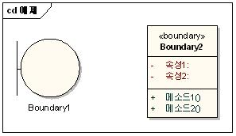
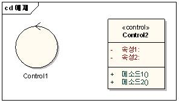
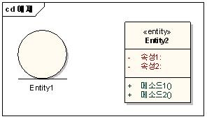
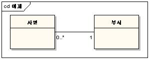
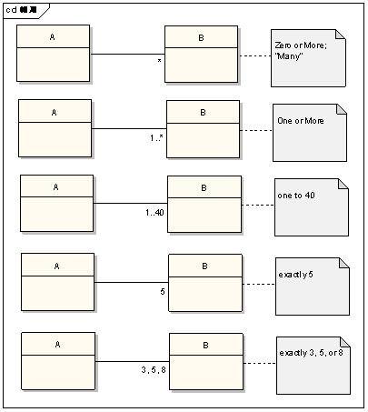
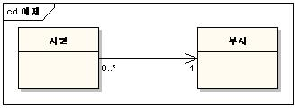
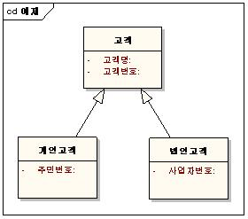
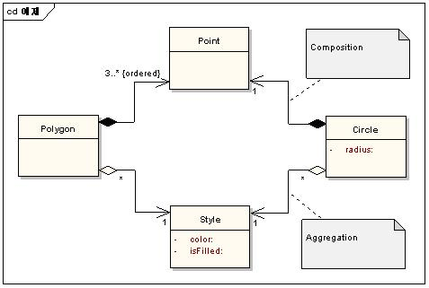
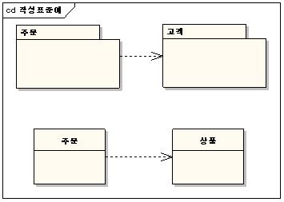

| Work Product (Artifact): 분석 클래스다이어그램 |
| |
 |
| 요구사항을 바탕으로 분석클래스를 도출하고 각 클래스의 속성과 이들간의 관계를 파악한다. |
|
Relationships
| Input To | Mandatory:
| Optional:
| External:
|
Main Description
[클래스다이어그램]
작성항목
-
클래스
(Class)
유스케이스 분석 태스크에서의 분석클래스는 각각 타입을 갖는다. 이 타입을 갖는 클래스는 UML의 stereotype을 지정하여 표현하도록 한다. 특히 Boundary 클래스, Control 클래스,
Entity 클래스는 Icon 형태로 표현 가능하다.
-
Boundary
클래스

왼쪽은 Icon 형태로 표현한 것이며, 오른쪽은 일반적인 표기 형태를 따른 것이다.
Boundary 클래스는 시스템 외부와 내부의 상호작용을 표현하는 데 사용되는 클래스이며, 일반적으로 윈도우, 웹 클라이언트 페이지와 같이 사용자와 시스템 간의 상호작용에서 나타나는 User
Interface; 대내외 연계 시스템과 같이 외부 시스템과의 상호작용에서 나타나는 System Interface; 외부 이벤트를 감지하는 디바이스, 센서 등과의 상호작용에서 나타나는
Device Interface로 구분할 수 있다. 프로젝트에서는 각각에 대해 명명규칙을 정의하여 명확하게 구분하는 것이 좋다. 예를 들어, User Interface에 대해서는 “XXX +
UI”, System Interface에 대해서는 “<시스템이름> + SI” 등으로 정의할 수 있다.
-
Control
클래스

Control 클래스는 유스케이스 내의 처리흐름을 제어, 조정하는 데에 사용되는 클래스이다. 다시 말해 유스케이스정의서에 표현된 처리흐름(Flow of Events)에서의 Flow를 가지고
있는 클래스이다. 이 역시 마찬가지로 명명규칙을 정의하여 사용하도록 한다. 예를 들어, “XXX + Handler” 또는 “XXX + CTRL” 등으로 정의할 수
있다.
-
Entity
클래스

Entity 클래스는 유스케이스의 수행과정에서 시스템이 영속적으로 유지해야 하는 정보를 표현하는 클래스이다. 논리ERD(초안)에서 정의된 엔티티의 많은 부분이 Entity 클래스로 정의될 수
있다. 또한 유스케이스 정의서로부터 클래스를 도출하고 속성으로 도출되는 것은 해당 클래스에 정의한다. Entity 클래스는 별도의 suffix를 사용하지 않고, 또한 ~정보(~info),
~데이터(~data)와 같이 명명하지 않도록 한다.
-
오퍼레이션
(Operation)
분석클래스가 갖는 오퍼레이션은 보통 시퀀스다이어그램의 메시지에서 도출된다. 이 오퍼레이션은 실제 구현될 대상으로 생각하기보다는 그 클래스가 갖는 책임(Responsibility)이라는 의미로
생각해야 한다. 즉, 모든 오퍼레이션은 메시지를 받은 클래스가 책임지고 제공해야 하는 서비스로 간주하여 간단하게 기술하고, 매개변수는 핵심적인 속성 위주로 작성하며, 매개변수 타입과 리턴
타입은 작성하지 않는다.
-
속성
(Attribute)
분석클래스가 책임진 서비스를 수행하기 위해서는 내부적으로 관리해야 하는 속성정보가 필요하다. 이 속성은 클래스의 행위에 필요한 정보를 유추하거나 일반적인 도메인 지식으로부터 식별할 수 있다.
분석단계의 클래스 속성은 다음과 같은 가이드를 참고하도록 한다.
-
속성명은
의미가 명확하고 내용을 함축성 있게 작성한다.
-
집합개념의
속성은 단순개념으로 가능한 최소단위까지 분할한 후 관리 필요에 따라 통합한다. 단, 일자, 시간, 성명, 주민등록번호, 우편번호 등은 일반적으로 분할하지 않는 것이
좋다.
-
분할
및 통합의 기준은 업무의 요구사항에 따른다.
-
필요시
표준 약어를 사용한다.
-
가능한
복합명사를 사용한다. (예: 일자 판매일자)
-
각
속성이 최대한 단일 클래스에서만 사용되도록 정의한다.
-
분석단계의
속성 타입은 개념적으로 작성한다. 예를 들어, 정수(integer)보다 양(amount) 정도로 정의할 수 있다.
-
Entity
클래스의 속성은 도메인 클래스나 데이터 모델이 갖는 속성을 바탕으로 도출한다.
-
사람
액터와 상호작용하는 Boundary 클래스의 속성은 액터가 다루는 정보를 표현한다. 그러나 화면정의서를 통해 더욱 상세한 정보가 기록되는 경우가 대부분이므로 굳이 Boundary
클래스에 기록할 필요는 없다.
-
시스템
액터와 상호작용하는 Boundary 클래스의 속성은 시스템 인터페이스가 다루는 정보를 표현한다.
-
Control
클래스는 짧은 생명주기를 갖기 때문에 거의 속성을 갖지 않는다. 그러나 유스케이스 실현(Use-Case Realize) 동안에 발생하는 accumulated 혹은 derived
값을 속성으로 가질 수 있다.
-
관계
(Relationship)
-
-
Association

두 개 이상의 클래스가 개념적으로 연결되어 있음을 의미하며, 클래스 간의 관계가 일정 기간 동안 보존할 필요가 있는 안정적 의존관계(Stable dependency)를 표현한다. 일반적으로
Association은 Association Name을 갖게 되나 클래스다이어그램(분석)에서 모든 관계에 대해 표현할 필요는 없다. 단, Entity 클래스 간에 Association
Name은 명확한 연관관계를 규정하기 위해 작성할 것을 권고한다.
Association의 각 끝(end)을 Role이라고 하며, Role은 선택적으로
◦ Name
◦ Multiplicity
◦ Navigability
를 가질 수 있다.
Role Name은 명시적으로 작성할 수도 있지만 그렇지 않은 경우는 클래스 이름을 그대로 사용하게 된다.
Multiplicity는 몇 개의 클래스“A”인스턴스(객체)가 몇 개의 “B”인스턴스(객체)와 관계가 있는 지를 정의하는 것이다. 예를 들어 위 그림의 경우, 좌에서 우로 보면 한 사원은
반드시 하나의 부서에 소속되는 것이고, 우에서 좌로 보면 한 부서에는 여러 명의 사원이 배치 받을 수도 있고 아예 없을 수도 있다고 해석된다. 다음은 Multiplicity의 다양한 경우에
대한 예제이다.

Multiplicity는 해당 도메인의 비즈니스 규칙을 정의하는 중요한 요소이므로 주의를 기울여 정의해야만 한다.
Navigability는 Association의 방향성을 나타내는 것이다. 예를 들어 다음과 같이 작성되었다면

사원 클래스는 어떤 부서 소속인지 알려줄 책임(responsibility)을 갖고 있으나 부서 클래스는 어떤 사원들을 배치 받았는 지 알지 못한다는 의미이다. 이와 같이 한 방향으로만
Navigability가 존재하는 경우를 Unidirectional Association 이라 하며 양방향으로 Navigability가 있는 경우를 Bidirectional
Association 이라 한다.
UML에서는 Navigability가 표현되지 않은 Association은 두 가지 의미로 해석하는 데 방향성을 아직 알 수 없는 경우 또는 Bidirectional인 데 표현을 생략한 경우로
볼 수 있다. 따라서 프로젝트에서는 둘 중 하나의 의미를 결정하여 표준으로 사용하면 되는 데 일반적으로 요구정의, 분석단계에서는 Bidirectional의 의미로 생략하여 사용하고
설계단계에서는 보다 명확한 의미로 Navigability가 표현되지 않았으면 아직 미결정된 사항으로 본다.
분석단계에서 위 Role과 관련된 Name, Multiplicity, Navigability는 Entity 클래스 간의 관계에서만 작성토록 권고한다. 요구정의, 분석단계의 클래스는 아직
소프트웨어 구현 요소라고 볼 수 없기 때문에 연관관계의 자세한 사항을 구체적으로 파악할 필요는 없다. 오히려 이 단계에서는 어떤 클래스가 식별될 것인가에 초점을 두도록
한다.
-
Generalization

여러 다른 클래스 사이에 공유하는 또는 공통으로 나타나는 속성 및 행위(오퍼레이션)를 일반화하는 개념이다. 즉 한 Generalization은 일반적인(General)것과 일반적인 것에서
특화된 것 사이의 관계를 나타낼 때 사용된다. 객체지향 언어에서 흔히 볼 수 있는 상속의 의미와 동일하다.
분석단계에서는 주로 Entity 클래스간의 관계에서만 나타날 수 있고 Boundary, Control 클래스에서는 거의 나타나지 않는다.
-
Aggregation
과 Composition

Aggregation과 Composition은 Association의 한 형태로 둘 다 전체(Whole)와 부분(Part)의 part-of 관계를 나타낸다. 다이아몬드로 나타내며 도형이 나가는
쪽이 부분이 되고 다이아몬드형이 들어가는 부분이 전체가 된다. Aggregation과 Composition의 차이는 우선 표기법이 다르고, Aggregation의 경우 하나의 부분(Part)
객체가 여러 개의 전체(Whole) 객체에 의해 공유될 수 있는 반면, Composition은 좀 더 강한 결합도를 가지는 Aggregation의 변형으로 하나의 부분(Part) 객체가 단
하나의 전체(Whole) 객체에만 소속되며 각 부분 객체는 전체 객체와 생명주기를 같이 하는 특징을 갖는다. 그러나 실무에서 이를 명확히 구분하는 것이 사실 모호한 경우가 많고 한편으로는
분석단계에서 두 관계를 구분하는 것이 큰 효과가 없는 경우가 많다. 따라서 설계단계에서나 명확히 구분해야 할 이유가 있는 경우에 한해 사용하도록 하고 프로젝트에서는 둘 중 하나를 표준으로
정하여 작성하도록 한다.
-
Dependency

두 구성요소 사이에 Dependency가 존재한다는 것은 한 구성요소의 변경사항이 다른 구성요소의 변경을 유발하는 경우를 말한다. 반드시 Navigability가 표시된 점선으로 표현하며
화살표가 들어가는 쪽의 변경사항이 화살표가 나가는 쪽에 영향을 준다. Dependency는 Association보다 약한 관계이며 일시적으로(temporary) 발생하는 관계이다. 참고로
Association(Association, Generalization, Aggregation, Composition)은 이미 Dependency 관계이다.
패키지 간의 Dependency는 각 패키지 내에 포함된 클래스(또는 패키지) 간의 관계에 의해서 발생하는데 예를 들어 서로 다른 패키지에 소속된 두 개의 클래스가 Association 관계를
갖는다면 두 패키지 사이에는 Dependency 관계가 형성된다.
클래스 간의 Dependency는 일반적으로 한 클래스가 다른 클래스를 오퍼레이션의 매개변수로 사용하거나 오퍼레이션 내에서 선언된 지역변수로 다른 클래스를 사용할 때 발생한다.
|
Properties
| Optional |  |
| Planned |  |
Illustrations
Key Considerations
작성시
고려사항
-
클래스다이어그램(분석)은
유스케이스 단위로 작성하며, 이렇게 유스케이스 단위로 작성된 클래스다이어그램을 VOPC(View Of Participating Classes)라고 한다. 즉 VOPC는 전체 클래스 중에서 해당 유스케이스에
참여하는 클래스만 골라서 그린 클래스다이어그램이다.
-
시퀀스다이어그램(분석)을
작성하지 않는 경우는 해당 유스케이스의 기능을 수행하는 분석클래스를 식별하기 어려워 추적성에 공백이 발생할 수 있으므로 추적표 등을 통해 명확히 정의하도록 한다.
|
Tailoring
| Impact of not having |
미작성시
영향
-
확장성(Extensibility),
보수성(Maintainability), 재사용성(Reusability) 등을 고려하여 시스템을 구성하기 어렵다.
-
분석단계
작성원칙과 분석전략이 준수되었는 지 파악하기 어렵다.
-
컴포넌트
또는 프레임워크 등을 활용하여 재사용할 부분을 찾기 어렵다.
-
Boundary
클래스, Control 클래스, Entity 클래스의 구성을 파악하기 어렵다.
-
클래스의
속성, 상관관계 등의 파악이 어렵다.
-
시퀀스다이어그램(분석)과의
상호보완관계를 이해하기 어려워 식별된 클래스의 정제가 이루어지지 않는다.
|
| Reasons for not needing |
작성이
불필요한 경우
-
클래스다이어그램(분석)은 반드시 작성하도록 한다.
|
| Representation Options |
제출시
고려사항
-
분석단계
완료 시 고객에게 제출하고 승인을 받도록 한다.
|
|